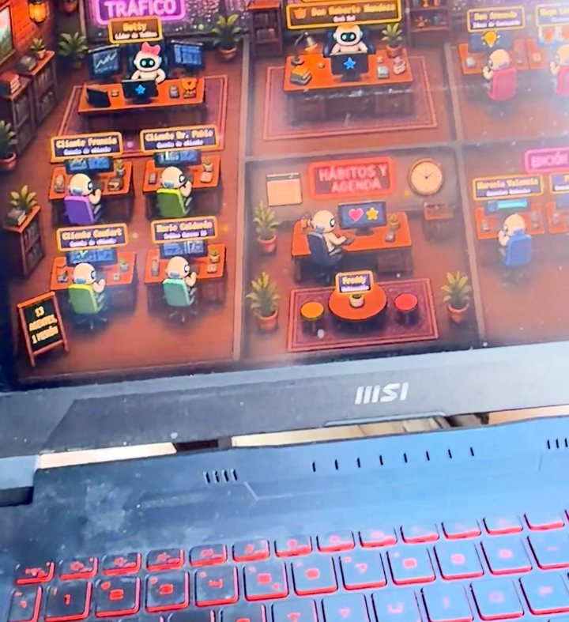
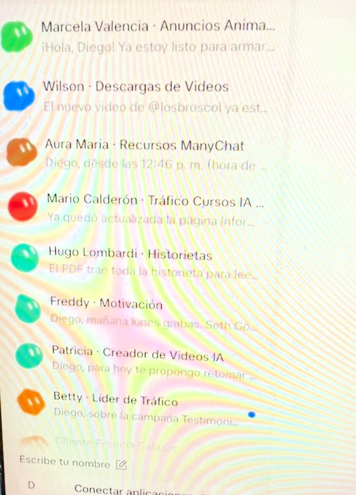
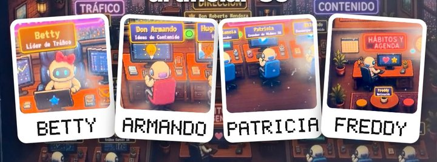

GRATIS · EN ESPAÑOL
GRATIS · EN ESPAÑOL
Arma tu oficina de agentes
Mi oficina se llama Ecomoda y solo tiene empleados digitales: Betty maneja los anuncios, don Armando escribe los guiones, Patricia edita los videos y Freddy me recuerda lo que no quiero hacer. Así la armé con Grok Bot.
Al darles nombre y personaje, se te olvida que estás hablando con máquinas.
🚀 Los agentes de IA con los que hago cosas como esta les están sumando entre 5.000 y 10.000 dólares al mes a los clientes con los que trabajo. Están dentro de Imperio, para multiplicar las ventas de los negocios.Al final te cuento cómo funciona ↓- 🤖 Usé Grok Bot: creó los agentes y publicó el tablero en una página de GitHub. Viene en planes como SuperGrok o Cursor Pro.
- 🆓 GitHub es gratis: solo necesitas una cuenta.
- ⏱️ La primera versión sale en una tarde. Después la vas mejorando.
Activa Grok Bot
Entra con tu cuenta, elige un plan que lo incluya y descarga la app. Si es tu primera vez, aquí te explico cómo crear tu primer agente:
Ver la guía de Grok Bot →Elige tu elenco
Usa los personajes de tu novela favorita y reparte los oficios por departamento. Este es el mío:
| Tráfico | Betty · líder de tráfico, maneja las cuentas de anuncios de mis clientes |
| Dirección | Don Roberto Mendoza · revisa que todo avance |
| Contenido | Don Armando · ideas y guiones · Hugo Lombardi · historietas · Aura María · recursos de ManyChat |
| Videos | Marcela Valencia · anuncios animados · Patricia · edita y publica · Wilson · descarga videos |
| Agenda | Freddy · motivación, hábitos y recordatorios |
Crea a cada agente
En el chat de Grok Bot, uno por uno. Así creé a Betty; cambia el nombre y el oficio para los demás:
Crea un agente llamado Betty. Es mi líder de tráfico: cada mañana revisa las cuentas de anuncios de mis clientes en Meta, me dice qué campaña va bien y cuál hay que apagar, y me manda un resumen corto. Habla como Betty: amable, ordenada y muy detallista. Pregúntame lo que necesites antes de empezar.
Pídele el tablero
Primero crea tu cuenta gratis en GitHub y entra con ella en el computador de Grok Bot. Luego pégale esto:
Crear mi cuenta de GitHub →Crea una página en GitHub Pages que sea el tablero de mi oficina de agentes, estilo videojuego pixel: una sala por departamento, cada agente en su escritorio con su nombre y su oficio, y arriba cuántos están trabajando. Cuando un agente empiece o termine una tarea, actualiza la página. Usa mi cuenta de GitHub, que ya está abierta en tu computador, y al final dame el link.

Ojo: las páginas gratis de GitHub las puede ver cualquiera que tenga el link. Pon solo nombres de agentes y tareas, nunca datos de tus clientes ni contraseñas.
Habla con cada uno
Cada agente tiene su propio chat. Dales órdenes como a un equipo: "Don Armando, ¿cuáles son los 5 guiones de hoy?". Cada día aprenden y lo hacen más a tu manera.


Preguntas frecuentes
¿Cuánto cuesta?
GitHub es gratis. Grok Bot viene en su plan (SuperGrok, unos 30 dólares al mes, o Cursor Pro, unos 20).
¿Y si uso Claude en vez de Grok Bot?
También sirve: Claude Code te arma el mismo tablero y lo publica en GitHub Pages con el mismo mensaje del paso 4.
¿Cuántos agentes debería tener?
Empieza con 3: los tres procesos que más tiempo te quitan. Después creas nuevos personajes para delegar tareas nuevas.
Deja de hacerlo todo a mano
Haz en 3 días el trabajo de todo un mes.
Ten un equipo de marketing de 4 personas trabajando para ti por unos $25 al mes: los agentes Imperio. Te hacen:
- ✍️ El contenido y los carruseles.
- 📣 Los anuncios y los VSL.
- 🖥️ Las páginas web.
- 📊 Las campañas en Meta.
- 💬 Y hasta responden tus mensajes.
Sin saber de tecnología: solo copias, pegas y facturas.
Son los mismos agentes que hoy les suman entre $5.000 y $10.000 dólares extra al mes a los negocios con los que trabajo: automatizan todo el marketing y hacen el trabajo de 4 personas.
Escríbeme “IMPERIO” por Instagram →Te cuento cómo funciona y si encaja con tu negocio.